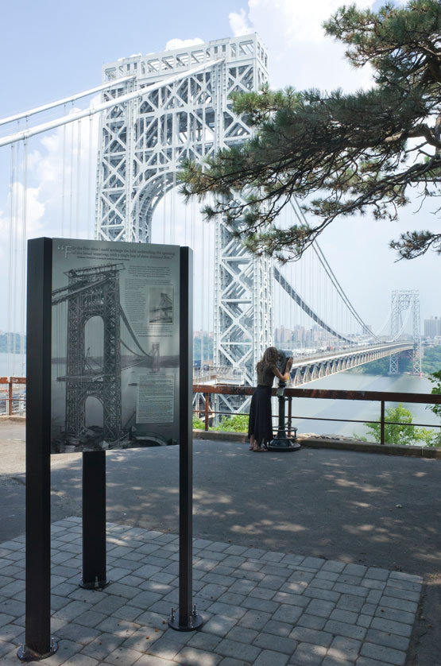

Neighborhood

I grew up in the rocktop Palisades area of Fort Lee, NJ. The area is suburban and gorgeous, with a mix of both historic attributes such as Historic Park (shown below) and modern buildings (the buildings are literally called The Modern).
